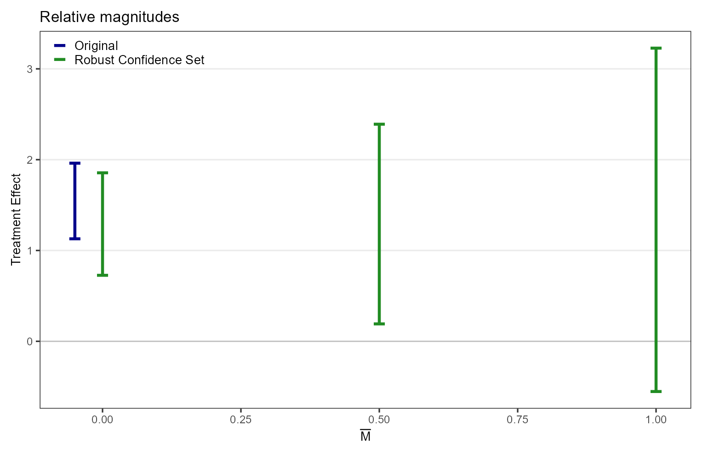
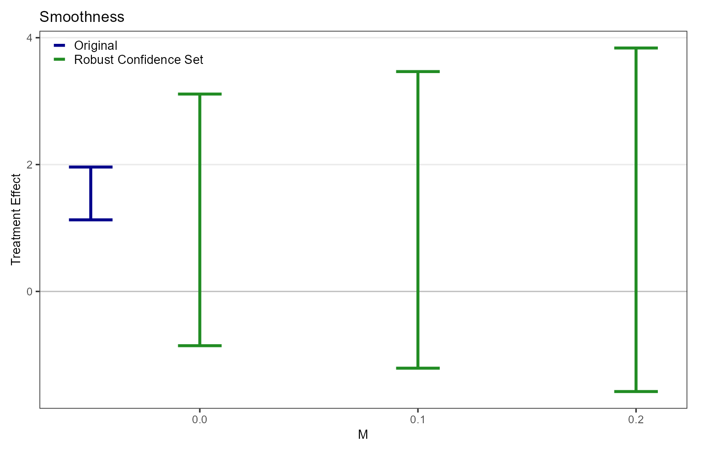
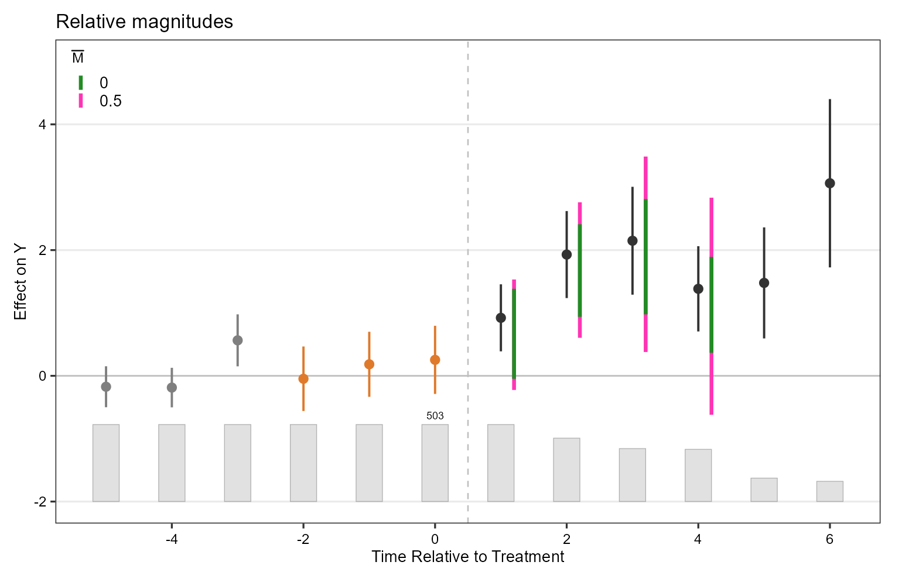
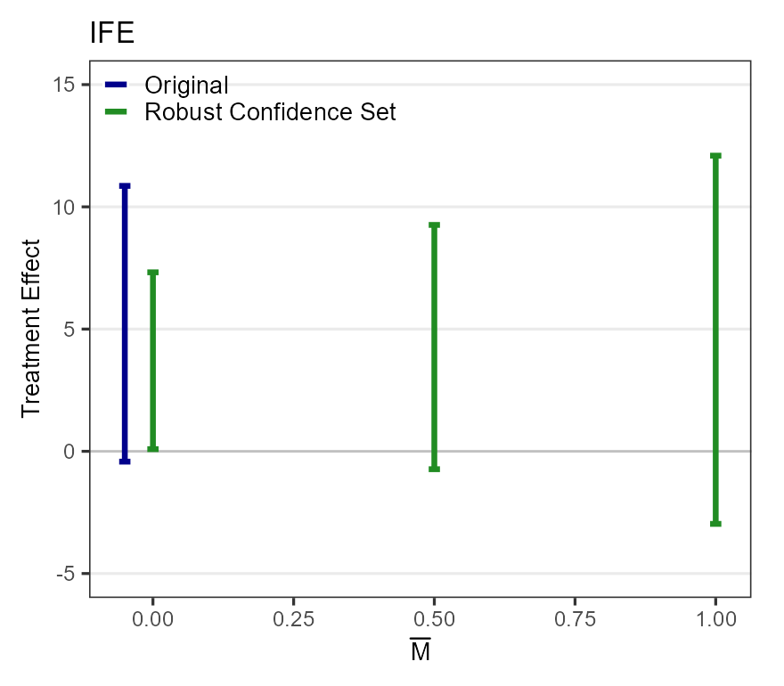
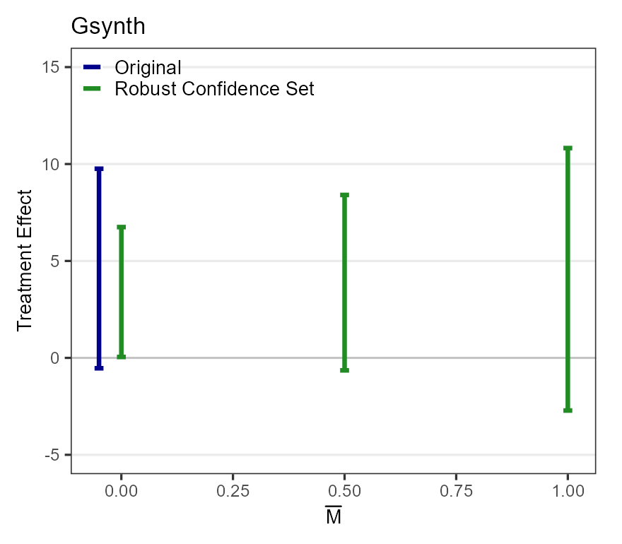

Sensitivity analysis with fect and HonestDiDFEct
Ziyi Liu
Source:vignettes/articles/tutorial.Rmd
tutorial.RmdA placebo test in fect holds out the last
pre-treatment periods and estimates effects there, where there should be
no effect. fect_sens() uses these placebo coefficients as a
benchmark for how far parallel trends could fail after treatment. It
reports a robust confidence set for the treatment effect at each degree
of failure you allow. fect_sens() calls
HonestDiDFEct for the computation. You need both
packages.
install.packages("fect")
# install.packages("remotes")
remotes::install_github("lzy318/HonestDiDFEct")Fit fect with placebo periods
The example is Hainmueller and Hangartner (2019), who study the
effect of indirect versus direct democracy on naturalization rates in
Swiss municipalities. The data come with fect as
hh2019. The outcome nat_rate_ord is the
naturalization rate, and effects are in percentage points.
library(fect)
data(hh2019)
out <- fect(nat_rate_ord ~ indirect, data = hh2019, index = c("bfs", "year"),
method = "fe", se = TRUE,
placeboTest = TRUE, placebo.period = c(-2, 0),
parallel = FALSE, seed = 1234)In fect, s = 1 is the first treated period and s = 0
is the last untreated one. placebo.period = c(-2, 0) holds
out s = -2, -1 and 0. fect imputes the untreated
outcome in these periods in the same way as after treatment.
round(out$est.att[as.character(-2:6), c("ATT", "S.E.", "count")], 3)
#> ATT S.E. count
#> -2 -0.047 0.262 503
#> -1 0.183 0.264 503
#> 0 0.254 0.276 503
#> 1 0.923 0.272 503
#> 2 1.929 0.353 414
#> 3 2.149 0.438 346
#> 4 1.384 0.346 341
#> 5 1.478 0.451 153
#> 6 3.063 0.683 132
round(diff(out$est.att[as.character(-2:0), "ATT"]), 3)
#> -1 0
#> 0.230 0.071The first three rows are the placebo coefficients, and the last line
gives the changes between them. The number of treated units in
count drops after s = 4. This tutorial uses s = 1 to 4.
Run the sensitivity analysis
out <- fect_sens(out, post.periods = 1:4,
Mbarvec = c(0, 0.5, 1), periodMbarvec = c(0, 0.5),
Mvec = c(0, 0.1, 0.2), periodMvec = c(0, 0.1))fect_sens() applies two restrictions to the violation,
the bias that the failure of parallel trends adds to the estimate at
each s. The relative-magnitudes restriction (RM) bounds each change in
the violation after s = 0 by Mbar times the largest change
between consecutive placebo periods. That largest change is 0.23 here,
from s = -2 to s = -1. The smoothness restriction (SD) bounds the change
in the slope of the violation from one period to the next by
M, in percentage points. The Delta column
below shows them as DeltaRM and DeltaSD.
Always pass post.periods, because its default fails. It
must start at 1 and have no gaps. Mbarvec and
Mvec hold the values of Mbar and
M for the average effect, and periodMbarvec
and periodMvec hold the values for each period. Do not set
a period vector to NULL, because that also drops the
results for the average effect. The fit and this call take a few
minutes. Each value and each post-treatment period adds run time.
Read the average effect
as.data.frame(out$sensitivity.rm$original)
#> lb ub method Delta
#> 1 1.13 1.96 Original NA
as.data.frame(out$sensitivity.rm$results)
#> lb ub method Delta Mbar
#> 1 0.727 1.86 C-LF DeltaRM 0.0
#> 2 0.192 2.39 C-LF DeltaRM 0.5
#> 3 -0.553 3.23 C-LF DeltaRM 1.0
plot(out, type = "sens", restrict = "rm", main = "Relative magnitudes")
out$sensitivity.rm holds the RM results, and
out$sensitivity.smooth holds the SD results. The target is
the average effect over s = 1 to 4, weighted by the number of treated
units. C-LF in the method column is the
conditional least-favorable hybrid, which fect_sens() uses
for both restrictions.
The Original interval is the usual confidence interval, on the
coefficients as fect reports them. For the robust
confidence sets, fect_sens() first subtracts the
coefficient at s = 0, 0.254 here, from every coefficient. At
Mbar = 0 the violation stays at its level at s = 0. The
center of the robust confidence set then lies 0.254 below the center of
the Original interval.
Zero is outside the robust confidence set at Mbar = 0.5
and inside it at Mbar = 1. So the estimate stays
significantly positive if each change in the violation after treatment
is at most half of the largest placebo change. It does not if a change
can be as large as that placebo change.
as.data.frame(out$sensitivity.smooth$results)
#> lb ub method Delta M
#> 1 -0.855 3.11 C-LF DeltaSD 0.0
#> 2 -1.210 3.47 C-LF DeltaSD 0.1
#> 3 -1.578 3.84 C-LF DeltaSD 0.2
plot(out, type = "sens", restrict = "sm", main = "Smoothness")
At M = 0 the robust confidence set is wide and includes
zero. The violation then continues in a straight line, with the slope it
has between s = -1 and s = 0. Extending that slope adds the sampling
error of the placebo coefficients to the estimate.
Read the effect in each period
plot(out, type = "sens_es", restrict = "rm", main = "Relative magnitudes",
xlim = c(-5, 6), ylim = c(-2, 5))
The dots and thin lines are the coefficients and confidence intervals
from fect, with the placebo periods in orange. The
colored bars are the robust confidence sets for each period, with the
same 0.254 subtracted. At Mbar = 0 each bar is centered
0.254 below its dot, and at Mbar = 0.5 about as far. At
Mbar = 0.5 the bars for s = 2 and 3 lie above zero, and the
bars for s = 1 and 4 include zero. The gray bars at the bottom show the
number of treated units. out$sensitivity.rm$periods holds
the numbers, and restrict = "sm" gives the same plot for
the smoothness restriction.
Fit interactive fixed effects models
data(turnout)
fit_turnout <- function(method) {
out <- fect(turnout ~ policy_edr, data = turnout, index = c("abb", "year"),
method = method, r = 2, CV = FALSE, se = TRUE,
placeboTest = TRUE, placebo.period = c(-2, 0),
parallel = FALSE, seed = 1234)
fect_sens(out, post.periods = 1:4,
Mbarvec = c(0, 0.5, 1), periodMbarvec = c(0, 0.5),
Mvec = c(0, 0.1, 0.2), periodMvec = c(0, 0.1))
}
out.ife <- fit_turnout("ife")
out.gsynth <- fit_turnout("gsynth")
rm_sets <- function(out) {
res <- out$sensitivity.rm
data.frame(lb = c(res$original$lb, res$results$lb),
ub = c(res$original$ub, res$results$ub))
}
data.frame(set = c("Original", paste("Mbar =", c(0, 0.5, 1))),
ife = rm_sets(out.ife), gsynth = rm_sets(out.gsynth))
#> set ife.lb ife.ub gsynth.lb gsynth.ub
#> 1 Original -0.4227 10.86 -0.536 9.76
#> 2 Mbar = 0 0.0883 7.32 0.047 6.75
#> 3 Mbar = 0.5 -0.7320 9.26 -0.644 8.40
#> 4 Mbar = 1 -2.9690 12.09 -2.716 10.82
same_axis <- ggplot2::coord_cartesian(ylim = c(-5, 15))
plot(out.ife, type = "sens", restrict = "rm", main = "IFE") + same_axis
plot(out.gsynth, type = "sens", restrict = "rm", main = "Gsynth") + same_axis

The sensitivity analysis applies to more flexible outcome models.
Only the fect() call changes, and fect_sens()
and plot() work as before. Both models add two latent
factors to the two-way fixed effects. method = "ife", r = 2
estimates them from all units’ untreated periods, and
method = "gsynth", r = 2 from the never-treated units only.
CV = FALSE fixes the number of factors instead of choosing
it by cross-validation.
This example uses turnout from fect, on
election-day registration and voter turnout in US states (Xu 2017). Here
the robust confidence set at Mbar = 0 is narrower than the
Original interval in both models, because subtracting the coefficient at
s = 0 cancels estimation error shared with the post-treatment
coefficients.
Use your own fect run
fect_sens() needs a fect() run with
placeboTest = TRUE and se = TRUE. The placebo
periods must be consecutive and end at s = 0, and you need at least two
of them. Covariates, unbalanced panels, and estimators such as
method = "ife" and method = "gsynth" work as
long as placebo periods are used. A run with loo = TRUE
does not work, and the package stops with a message.
To use another confidence-set method, or to add a sign or
monotonicity restriction, call createSensitivityResults()
or createSensitivityResults_relativeMagnitudes()
yourself.
Rambachan and Roth (2023) define the restrictions, and Chiu et al. (2026) adapt them to the estimators in fect. For a cohort-level analysis under staggered adoption, see CohortHonestDiD and Liu (2026).
References
Chiu, Albert, Xingchen Lan, Ziyi Liu, and Yiqing Xu. (2026). Causal Panel Analysis Under Parallel Trends: Lessons from a Large Reanalysis Study. American Political Science Review, 120(1): 245–266.
Hainmueller, Jens, and Dominik Hangartner (2019). Does Direct Democracy Hurt Immigrant Minorities? Evidence from Naturalization Decisions in Switzerland. American Journal of Political Science 63 (3): 530-547.
Liu, Ziyi (2026). Cohort-Anchored HonestDiD. arXiv:2509.01829.
Rambachan, Ashesh, and Jonathan Roth (2023). A More Credible Approach to Parallel Trends. Review of Economic Studies 90 (5): 2555-2591.
Xu, Yiqing (2017). Generalized Synthetic Control Method: Causal Inference with Interactive Fixed Effects Models. Political Analysis 25 (1): 57-76.